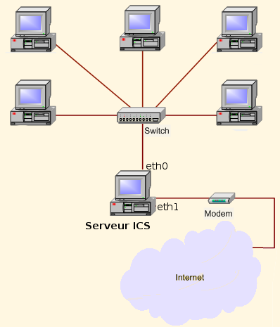

SLAM:Le BTS SIO SLAM est un diplôme dans le domaine informatique. Ce brevet de technicien supérieur se prépare en deux ans après le bac. La formation a pour thème principal se penche sur les services informatiques aux organisations et, plus précisément, sur l'option SLAM (solutions logicielles et applications métiers). C’est l’une des deux options possibles en BTS SIO avec SISR, solutions d’infrastructure, systèmes et réseaux.
SISR: Avec l’option SISR, la personne titulaire contribue à la production et à la fourniture de services en réalisant ou en adaptant des solutions d’infrastructure et en assurant le fonctionnement optimal des équipements et des services informatiques.

| SLAM | |
| SISR |  |